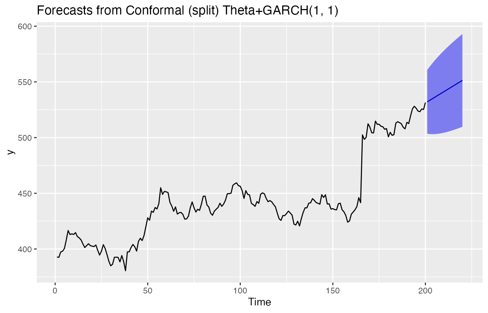

Any model + GARCH(1, 1)
anymodelplusgarch.Rmd
(res <- ahead::agnosticgarchf(fpp2::goog200,
FUN=forecast::auto.arima, h=20))## Registered S3 method overwritten by 'quantmod':
## method from
## as.zoo.data.frame zoo## Point Forecast Lo 95 Hi 95
## 201 532.1750 518.1879 546.1621
## 202 532.8717 518.8757 546.8678
## 203 533.5684 519.5635 547.5734
## 204 534.2652 520.2513 548.2790
## 205 534.9619 520.9391 548.9847
## 206 535.6586 521.6269 549.6903
## 207 536.3553 522.3148 550.3959
## 208 537.0521 523.0026 551.1015
## 209 537.7488 523.6905 551.8071
## 210 538.4455 524.3783 552.5127
## 211 539.1422 525.0662 553.2183
## 212 539.8390 525.7540 553.9239
## 213 540.5357 526.4419 554.6295
## 214 541.2324 527.1298 555.3351
## 215 541.9291 527.8176 556.0407
## 216 542.6259 528.5055 556.7462
## 217 543.3226 529.1934 557.4518
## 218 544.0193 529.8813 558.1573
## 219 544.7160 530.5692 558.8629
## 220 545.4128 531.2571 559.5684
ggplot2::autoplot(res)
(res <- ahead::agnosticgarchf(fpp2::goog200,
FUN=forecast::thetaf, h=20))## Point Forecast Lo 95 Hi 95
## 201 531.4982 518.2318 544.7647
## 202 531.7610 516.1991 547.3230
## 203 532.0238 514.1041 549.9436
## 204 532.2867 511.9078 552.6655
## 205 532.5495 509.5788 555.5202
## 206 532.8123 507.0890 558.5356
## 207 533.0751 504.4117 561.7385
## 208 533.3379 501.5205 565.1553
## 209 533.6007 498.3882 568.8131
## 210 533.8635 494.9868 572.7402
## 211 534.1263 491.2862 576.9664
## 212 534.3891 487.2548 581.5234
## 213 534.6519 482.8583 586.4455
## 214 534.9147 478.0601 591.7694
## 215 535.1775 472.8201 597.5349
## 216 535.4403 467.0955 603.7852
## 217 535.7031 460.8392 610.5671
## 218 535.9659 454.0003 617.9316
## 219 536.2288 446.5234 625.9341
## 220 536.4916 438.3481 634.6350
ggplot2::autoplot(res)
(res <- ahead::agnosticgarchf(fpp2::goog200,
FUN=ahead::ridge2f, h=20))## Point Forecast Lo 95 Hi 95
## 201 532.1740 519.4742 544.8737
## 202 532.9003 517.9900 547.8106
## 203 533.6547 516.8217 550.4877
## 204 534.4346 515.8770 552.9921
## 205 535.2377 515.1028 555.3726
## 206 536.0622 514.4648 557.6596
## 207 536.9062 513.9392 559.8731
## 208 537.7679 513.5087 562.0272
## 209 538.6460 513.1598 564.1321
## 210 539.5390 512.8824 566.1956
## 211 540.4458 512.6679 568.2236
## 212 541.3651 512.5096 570.2207
## 213 542.2961 512.4018 572.1905
## 214 543.2378 512.3395 574.1361
## 215 544.1894 512.3188 576.0601
## 216 545.1501 512.3359 577.9643
## 217 546.1193 512.3879 579.8506
## 218 547.0963 512.4721 581.7205
## 219 548.0805 512.5859 583.5751
## 220 549.0716 512.7274 585.4158
ggplot2::autoplot(res)
(res <- ahead::agnosticgarchf(fpp2::goog200,
FUN=ahead::loessf, h=20))## Point Forecast Lo 95 Hi 95
## 201 544.3276 520.1558 568.4994
## 202 548.2888 523.7199 572.8577
## 203 552.0027 527.0698 576.9356
## 204 554.1810 528.9140 579.4481
## 205 556.8539 531.2797 582.4282
## 206 560.3601 534.5032 586.2170
## 207 561.5067 535.3894 587.6240
## 208 565.6928 539.3354 592.0502
## 209 567.2796 540.7007 593.8586
## 210 570.1362 543.3526 596.9198
## 211 574.0123 547.0396 600.9850
## 212 578.5510 551.4034 605.6985
## 213 580.8285 553.5192 608.1378
## 214 584.2104 556.7513 611.6694
## 215 587.9165 560.3188 615.5143
## 216 591.1329 563.4067 618.8592
## 217 594.0383 566.1930 621.8836
## 218 595.6430 567.6873 623.5987
## 219 602.2172 574.1591 630.2753
## 220 604.7474 576.5944 632.9005
ggplot2::autoplot(res)
res <- ahead::agnosticgarchf(fpp2::goog200, FUN=ahead::dynrmf, h=20,
fit_func=e1071::svm)
ggplot2::autoplot(res)
res <- ahead::agnosticgarchf(fpp2::goog200, FUN=ahead::dynrmf, h=20,
fit_func=randomForest::randomForest)
ggplot2::autoplot(res)
res <- ahead::agnosticgarchf(fpp2::goog200, FUN=ahead::eatf, h=20)
ggplot2::autoplot(res)
res <- ahead::agnosticgarchf(fpp2::goog200, FUN=ahead::glmthetaf, h=20)
ggplot2::autoplot(res)